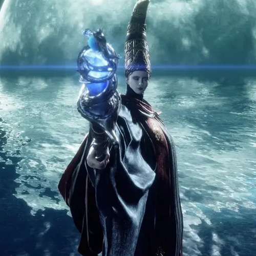

Queen Marika the Eternal
The goddess Marika originally came from the lands of the Numen. She was an Empyrean who ascended to godhood and became ruler of the Lands Between with the assistance of an Outer God: the Greater Will. Marika had a male half by the name of Radagon. The exact nature of their relationship is unclear, but while the two had separate bodies and wills, they were in truth one and the same. As an Empyrean, she was gifted a Shadow, her half-brother Maliketh.

Malenia the Severed
Malenia was born the child of Queen Marika and her second husband, the Elden Lord Radagon. She had a twin by the name of Miquella. Both Malenia and Miquella were born as Empyreans, meaning they had the potential to one day replace their mother as the god of a new age. But since Radagon and Marika were in fact the same person, Malenia and Miquella were born cursed. Malenia was afflicted with the Scarlet Rot, which ravaged her from within and would cost her several limbs, while Miquella was cursed with eternal childhood, unable to ever grow into adulthood. At some point, Malenia encountered a blind swordsman who had sealed away an Outer God of Rot. The swordsman became her master, and trained her in the ways of the blade. Malenia would eventually become a warrior without peer.
-
- Lunar Princess Ranni
- The person who orchestrated the Night of the Black Knives. Lunar Princess Ranni. One of the children born to King Consort Radagon and his first wife, Renalla. Demigod and sister to General Radahn and Praetor Rykard.
-
- Melina
- Have you heard of the finger maidens? They serve the Two Fingers, offering guidance, and aid, to the Tarnished.
-
- Godwyn the Golden
- And in the Night of the Black Knives, Godwyn the Golden was first to perish.
-
- Praetor Rykard
- Rykard was amongst the children of Rennala and Radagon, who became demigod stepchildren after Radagon's union with Queen Marika. But Rykard fed himself to the blasphemous serpent, Great Rune and all.
-
- Godfrey
- Hark, my Lord Godfrey. We commend your deeds. Guidance hath delivered ye through to each ordeal, to the place ye stand. Put the Giants to the sword, and confine the flame atop the mount. Let a new epoch begin. An epoch glistening with life. Brandish the Elden Ring, for the Age of the Erdtree!
-

- Queen Rennala
- You wish no know more of Lady Rennala? She is Queen, head of the Carrian royal famlily, and governor of the Academy of Raya Lucaria. The great and beautiful Full Moon Witch.
-
- Hyetta
- She appears directly north of Stormveil Castle after you complete Irina's quest and defeat Godrick the Grafted. She asks for a Shabriri Grape to "feel the distant light" and do her duty as a Finger Maiden.
-
- Millicent
- Millicent is an NPC in Elden Ring. A woman afflicted by Malenia the Severed's Scarlet Rot, missing an arm because of it.